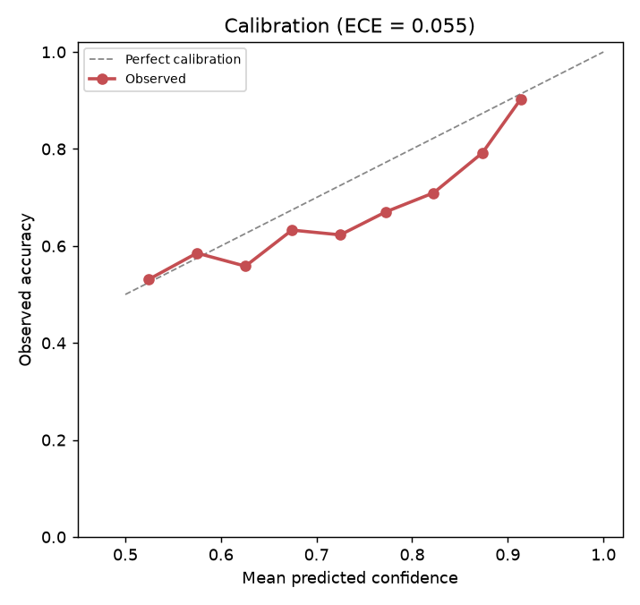
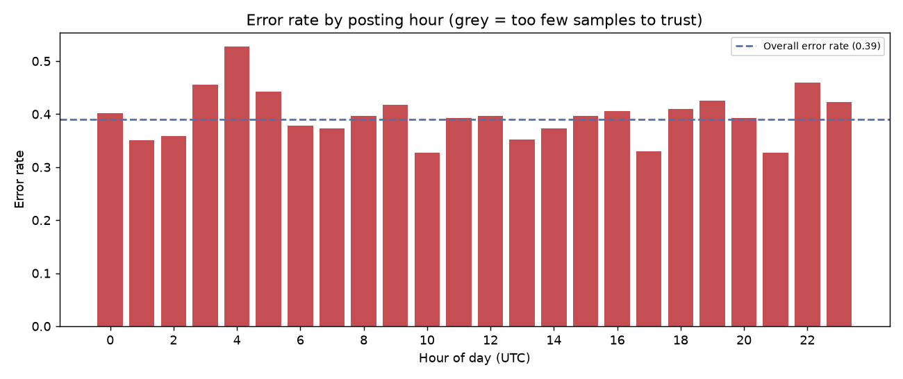

TF-IDF
text only
61.0%
+0.5 points over the baseline · macro F1 0.538
Not measurably.
Adding the posting time to TF-IDF moved accuracy from 61.0% to 61.0%, a change of -0.1 points on 3999 held-out posts.
Post by post, the timestamp corrected 33 posts the text-only model got wrong and broke 35 it had got right (p = 0.903, chi-square with continuity correction).
An inconclusive result is a result. It means that on this corpus the posting time carries no usable signal once the text is accounted for, which is worth more than a tuned number that happened to go up.
Majority-class baseline 60.5% on 3999 held-out posts — the notch on each bar. A bar that does not reach it means the model learned nothing.
text only
61.0%
+0.5 points over the baseline · macro F1 0.538
text + temporal
61.0%
+0.5 points over the baseline · macro F1 0.542
text only
62.0%
+1.4 points over the baseline · macro F1 0.533
text + temporal
61.7%
+1.1 points over the baseline · macro F1 0.535
A model can gain accuracy while getting a pile of previously-correct posts wrong. The only way to see that is post by post, on the rows where the two models disagree.
Of the 68 posts where the two models disagreed, the timestamp corrected 33 and broke 35 (p = 0.903, chi-square with continuity correction). Accuracy alone would have shown a single number and hidden this split.
| Architecture | Text only | Text + timestamp | Difference |
|---|---|---|---|
| TF-IDF | 61.0% | 61.0% | -0.1 points |
| Frozen all-MiniLM-L6-v2 | 62.0% | 61.7% | -0.3 points |
0.055
expected calibration error
Below the 0.1 line, so the probabilities mean roughly what they say. You can set a threshold and get the precision you asked for.
Wrong on 39.0% of 3999 posts — 431 called popular that were not, 1129 the other way.
| Slice | Bucket | Posts | Error rate |
|---|---|---|---|
| y_true | 1 | 1578 | 71.5% |
| day_of_week | 5 | 860 | 42.7% |
| is_late_night | 1.0 | 402 | 42.0% |
| hour | 04-07 | 433 | 41.3% |
| is_weekend | 1.0 | 1567 | 41.2% |
Every temporal feature here is UTC, and that bounds
what the result means. "Late night" is the 00:00–05:00 UTC band, not the small
hours where the poster was sitting. Without a per-author timezone, a local clock
cannot be recovered: someone in California writing at 2am local lands at 09:00
UTC and is not flagged; someone in Berlin writing at 2am local is.
The feature is still predictive, because UTC hour correlates with local hour and
with how many people are awake to vote on a post. It is not evidence about
anyone's sleep, and nothing here should be read as a claim about a person.
| Source | Stack Exchange API v2.3 |
|---|---|
| Site | stackoverflow |
| Licence | CC BY-SA 4.0 |
| Posts | 20000 |
| Span (UTC) | 2023-12-15 to 2023-12-31 |
| Fetched | 2026-10-23T14:57:49 |
Content from the Stack Exchange 'stackoverflow' site, retrieved via the public Stack Exchange API and licensed under CC BY-SA 4.0 (https://creativecommons.org/licenses/by-sa/4.0/). Individual posts remain attributable to their authors via the `id` column.


git clone https://github.com/yougijain/text-vs-timing.git
pip install -r requirements.txt
# a real corpus, with its licence and span recorded beside it
python -m data.fetch_dataset --site stackoverflow --rows 20000 \
--out datasets/posts.csv
# the grid, the error analysis, the document, and this page
python run_experiment.py --dataset datasets/posts.csv --epochs 3 \
--embeddings --site